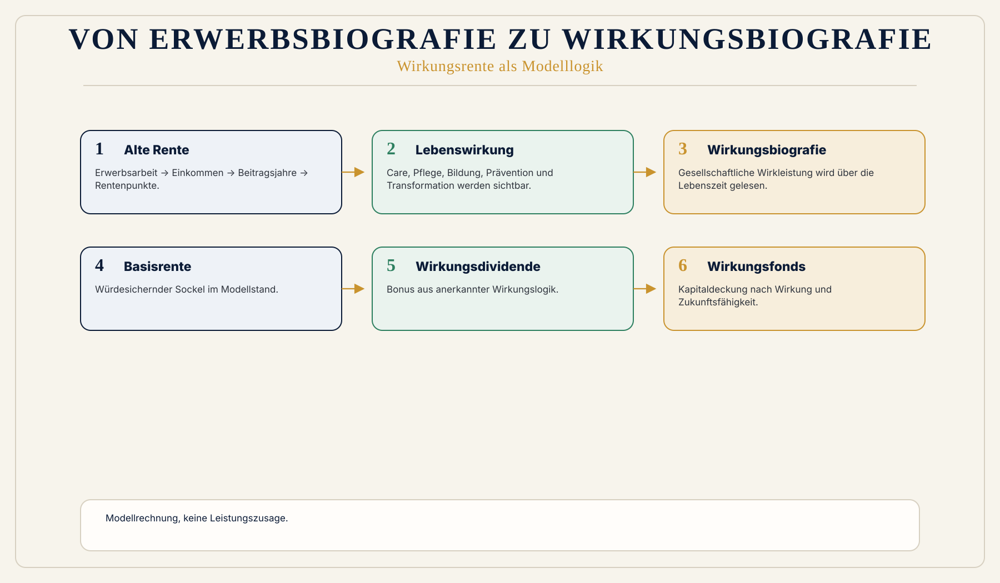

Erwerbsbiografie als Engführung
Alte Logik: Erwerbsarbeit -> Einkommen -> Beiträge -> Rentenpunkte -> Rentenzahlung.
 Wirkungsökonomie
Wirkungsökonomie
Für wen · Wirkungsrente
Von Erwerbsbiografie zu Wirkungsbiografie.
Das alte Rentensystem fragt vor allem: Wie lange hast du gearbeitet und wie viel hast du verdient?
Die Wirkungsrente fragt zusätzlich: Welche Wirkung hat dein Leben über die Zeit erzeugt?
Sie ersetzt nicht Würde, Solidarität oder den Generationenvertrag. Sie erweitert den Maßstab: von Erwerbsbiografie zu Wirkungsbiografie.
Warum diese Perspektive wichtig ist
Konzeptstand. Diese Seite zeigt Wirkungslogik und Modellrechnung. Keine Leistungszusage, keine finale gesetzliche oder fiskalische Bewertung.
Das heutige Rentensystem misst Einkommen, Beitragsjahre und Erwerbsbiografie. Es misst nicht ausreichend gesellschaftliche Wirkung.
Pflege, Bildung, Care, Gemeinwesen, Prävention, Demokratiearbeit, ökologische Regeneration und Transformationsarbeit sind systemisch tragend, aber häufig niedriger bezahlt.
Gleichzeitig schwächen Automatisierung, KI und neue Wertschöpfungsformen Erwerbsarbeit als alleinige Finanzierungsbasis. Produktivität steigt, aber sie fließt nicht automatisch in Beiträge und Alterssicherung.
Was heute falsch läuft
Alte Logik: Erwerbsarbeit -> Einkommen -> Beiträge -> Rentenpunkte -> Rentenzahlung.
Gesellschaftliche Stabilitätsleistungen werden nur begrenzt als Wirkung sichtbar.
Kapitaldeckung kann Zukunft stabilisieren oder Zukunftslast finanzieren.
Warum Reparatur nicht reicht
Beitragssätze, Lebensarbeitszeit und klassische Kapitaldeckung verschieben die Stellschrauben des alten Systems. Sie messen aber weiterhin vor allem Erwerbseinkommen, Beitragsjahre und Kapitalertrag.
Die Wirkungsrente erweitert den Maßstab: von Erwerbsbiografie zu Wirkungsbiografie, mit Basisrente, Wirkungsdividende und Wirkungsfonds als Modellbausteinen.
WÖk-Verschiebung
Wirkungslogik: Lebenswirkung -> Erwerbsarbeit + Care + Bildung + Pflege + Gemeinwesen + Prävention + Transformation -> Wirkungsbiografie -> Basisrente + Wirkungsdividende + Wirkungsfonds -> Alterssicherung.
Die drei Bausteine sind Basisrente, Wirkungsdividende und Wirkungsfonds / Impact-Fonds.
Arbeitsformel: Wirkungspunkte = Einkommenspunkte x Wirkungsfaktor x Wirkungsjahre x Gewichtung x Lernfaktor. Wirkungsdividende = Basisrente x (Wirkungspunkte / 100).
Wirkungsrente = Basisrente + Wirkungsdividende + Fondsanteil.
Konkreter Gewinn
Was nicht passiert
Keine Personenbewertung und kein Social Credit.
Keine finale gesetzliche oder fiskalische Bewertung ohne Modellprüfung.
Alle Zahlen sind Modellrechnung, wenn sie nicht ausdrücklich freigegeben sind.
Wirkungspfad
Konkretes Beispiel
Pflegekraft Anna: Einkommen 35.000 Euro, Durchschnittseinkommen 50.000 Euro, Einkommenspunkte 0,7, Wirkungsfaktor +2,5, Wirkungsjahre 40, Gewichtung 1,2, Lernfaktor 1,1. Wirkungspunkte = 92,4. Wirkungsdividende = 1.108,80 Euro. Modellrente = 2.308,80 Euro, gerundet ca. 2.310 Euro. Modellrechnung, keine Leistungszusage.
Visual
Drei Bausteine: Basisrente + Wirkungsdividende + Wirkungsfonds. Ergänzend eine ruhige Modellgrafik mit Beispielrechnung.

Modellrechner
Arbeitsformel nach Master: keine Leistungszusage, keine finale gesetzliche oder fiskalische Bewertung.
Wirkungsrente = Basisrente + Wirkungsdividende + Fondsanteil
Wirkungsdividende = Basisrente × (Wirkungspunkte / 100)
Wirkungspunkte = Einkommenspunkte × Wirkungsfaktor × Wirkungsjahre × Gewichtung × Lernfaktor
Default-Werte sind Arbeitspapierstand: Basisrente 1.200 Euro, Durchschnittseinkommen 50.000 Euro/Jahr, Wirkungsjahre 40, Fondsanteil 0 Euro.
Beispielkarte
35.000 Euro Einkommen / 50.000 Euro Durchschnittseinkommen = 0,7 Einkommenspunkte. Mit Wirkungsfaktor 2,5, 40 Wirkungsjahren, Gewichtung 1,2 und Lernfaktor 1,1 entstehen 92,4 Wirkungspunkte. Daraus folgt im Modell eine Wirkungsdividende von 1.108,80 Euro und eine Modellrente von rund 2.310 Euro.
Die Faktoren sind Modellparameter und müssten demokratisch, rechtlich und methodisch validiert werden.
Vertiefung
Die nächste Frage lautet nicht, wie diese Zielgruppe nachhaltiger wird. Sie lautet: Welche alte Steuerungslogik erzeugt das Problem, und wie verändert Wirkung die Logik selbst?
Quellenbasis / Einordnung